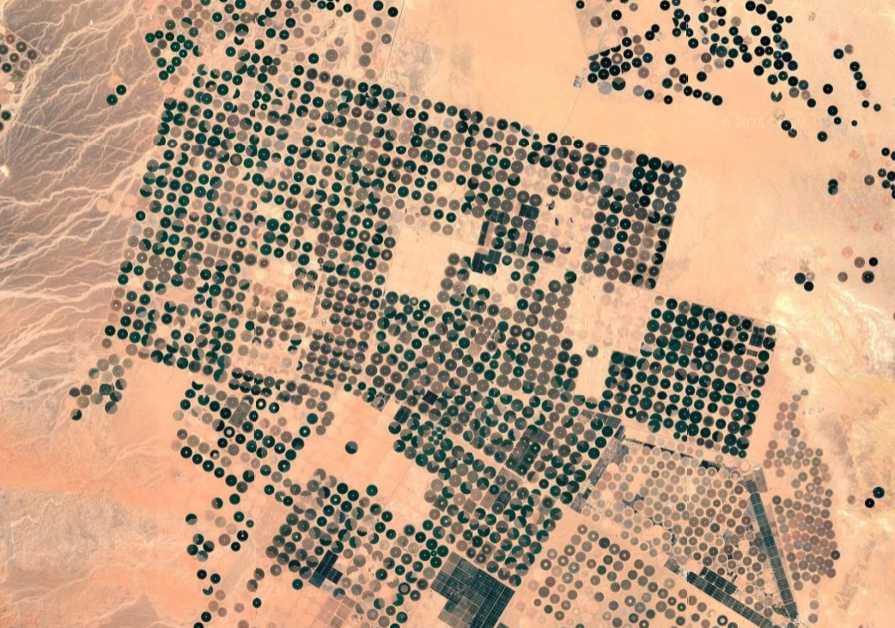
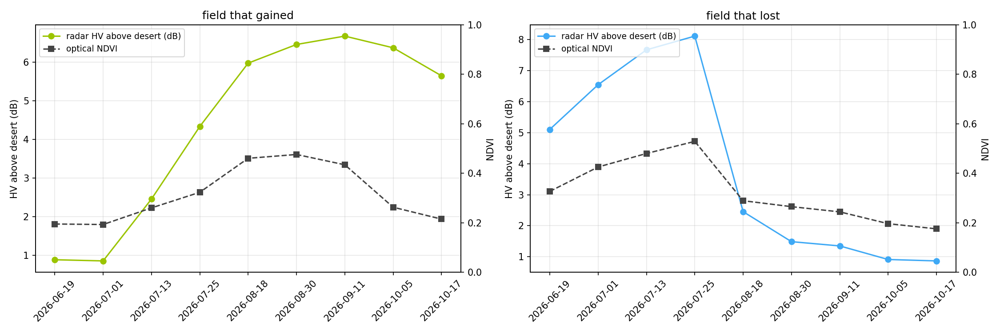

Echofield
Radar from space, watching desert farms switch on and off. Echofield uses NASA-ISRO NISAR radar to show which fields in northern Saudi Arabia grew, which were cut, and when.

The Basaita farms in Al Jouf. Imagery: Google Earth, 2021. This photo shows the area for context only and is not part of the radar analysis.
Research question
Al Jouf is called the breadbasket of Saudi Arabia. Its center-pivot farms draw on groundwater that does not refill, so knowing which fields are active, and when, matters for water and food security. This project asks whether spaceborne radar can show when these farms are active, and whether it can show something that an ordinary satellite photograph cannot.
The season in one field
This is the example field followed in the timeline and optical sections below. To see any of the 38 confirmed fields the same way, use the field explorer.
Study area and data
The study area is a 20 km by 20 km window of center-pivot farms in the Basaita area of Al Jouf, near Tubarjal. The data is NISAR L-band Level 2 GCOV, taken from a single viewing geometry (track 71, frame 17, ascending) so that every date is seen from the same angle. Each pixel covers 20 m, and there are two channels, HH and HV. Both respond to a mix of soil moisture, surface roughness and vegetation. HV is more sensitive to vegetation volume, and HH more to the surface.
Seasonal radar record, June to October 2026
Nine NISAR acquisitions of the same area in the HV channel. Brighter usually means more vegetation, although wet or rough ground also brightens the image. Move the slider or press play.

Two-date comparison
Drag to compare the first acquisition, June 19, with the last, October 17.

Change detection
The two dates are subtracted in decibels, which is the same as taking the ratio of the two echo powers. To separate real change from noise, the noise was measured over empty desert, where nothing should change, and found to be 0.50 dB. A pixel is counted as changed only if it moved by more than 1.5 dB, three times that amount. The desert stays black in the map, which shows that the method is not inventing change.

A region here is a connected group of changed pixels larger than 12 hectares. Regions are not checked against field boundaries, so one region can cover part of a field or join neighbouring fields; the counts are regions, not fields. This map also compares only the first and last dates. A field that grew and was cut in between ends where it started, so it shows as black even though a lot happened there. For that reason Echofield also follows individual fields through every date.
Field-level time series
Two example areas are followed here: the largest region where HV increased and the largest where it decreased. Each sits on a single center-pivot field in the radar image. Each point is the average of every pixel inside the area, measured against the desert on the same date. Averaging a whole field removes most of the speckle noise and gives one reliable value per field per date.

The field that lost vegetation dropped by 5.9 dB between July 25 and August 18, a fast change that is consistent with harvest, although radar alone cannot confirm the cause. The field that gained vegetation was flat until July 1 and then rose steadily to a peak on September 11. The rise is gradual and the fall is abrupt, and the radar record shows both.
What radar adds to a photograph
Skies over Al Jouf are usually clear, so seeing through cloud is not the main advantage here. The advantage is that radar records two signals where a photograph records one, and the two respond to different things.
Radar is most sensitive to two properties of the ground: roughness and the dielectric constant. Water has a very high dielectric constant, so wetting the soil makes it reflect more strongly. Leaves and stems scatter the signal in many directions and change its polarization, which adds to HV in particular. Both channels respond to all three effects, moisture, roughness and vegetation, but in different proportions, so comparing their timing gives a clue to what changed first.

On the field that grew, HH was close to its maximum by July 25. HV did not peak until September 11, about seven weeks later. One possible reading is a change in soil moisture or surface condition, such as irrigation or tillage, before the vegetation developed. This has not been tested independently, so it is a hypothesis rather than a finding.
Active vegetated area

Counting pixels more than 4 dB above the desert as vegetated, active area in the window grew from 19.4 km² on June 19 to 29.1 km² on October 5. The exact size depends on where that line is drawn, so the result was tested at 3 dB and 5 dB as well. The growth held at all three settings, between about one third and two thirds. Buildings, which are always very bright in the HH channel, were excluded.
Automatic field detection
Instead of choosing fields by hand, Echofield finds the circular fields itself. For every pixel it takes the most vegetated value reached during the season, so every field that was farmed at any point shows up as a bright disc. An edge detector traces the outlines of those discs, and a Hough circle transform searches the outlines for circles between 0.6 and 1.2 km across. A circle is kept only if its inside was vegetated at some point in the season.

The detector proposed 55 candidate circles. Each was checked by eye against fixed rules, rejecting any circle that sat on a rectangular plot, did not sit on a field, overlapped another circle, or was much smaller than its field. 38 passed, a candidate acceptance rate of 69%. This is the share of proposed circles kept after manual review, not an independently validated detection precision. As a rough check on how many fields the detector misses, every circular field in one 6 km by 6 km sample box was counted by eye on the season-maximum image: about 18 fields, of which the confirmed detections found 8, about 44%. This is an approximate recall from a single small sample, not a formal evaluation. The detector misses more than half of the fields, so the field counts describe the detected fields, not every field in the window. Following the confirmed fields through the season, the number of active fields rose from 4 on June 19 to a peak of 17 on October 5. This agrees with the area result above, measured a different way. Chartreuse circles were active on October 17 and sky blue circles were not.
The detector does not find every field. It misses fields that touch their neighbours and fields with faint or patchy edges, and a few circles overlap or sit inside a larger field. The counts are best read as a trend for the detected fields, not a full census.
Optical validation
To test whether the radar signal follows real vegetation, it was compared with an independent sensor. NASA's Harmonized Landsat and Sentinel-2 (HLS) product gives optical images of the same farms, and from those NDVI was computed, a standard measure of how green a field is. For each radar date the analysis used the clearest optical scene within 6 days. All 9 dates were matched to a cloud-free scene taken 0 to 1 day from the radar pass, and NDVI was sampled at exactly the same pixels as the radar.

On the field that lost vegetation, both sensors peak on July 25 and drop by August 18, with NDVI falling from 0.53 to 0.29. Two independent sensors therefore agree that the vegetation declined in that window. That is strong evidence of a decline, and harvest is the most likely cause, but neither sensor can show what caused it. On the field that gained vegetation, NDVI rose from 0.19 to 0.48 and peaked in late August, then fell to about 0.2, while radar stayed high until October 5. One likely explanation, not yet tested, is that the crop matured and dried. It would then lose its green colour while keeping the structure that radar responds to.

Pooling the 38 confirmed fields and 9 dates (342 field-date pairs), radar and NDVI have a Spearman correlation of 0.50, a moderate positive relationship. Because the 342 pairs repeat the same 38 fields, the correlation was also computed for each field on its own: 37 of the 38 fields are positive, with a median of 0.72. Within a field, radar and NDVI rise and fall together; the pooled value is lower mainly because fields sit at different levels. Classified as active or inactive (radar above 4 dB, NDVI above 0.3), the two agree 58% of the time. Most disagreements are fields that look green optically but stay below 4 dB in radar. One possible reason is vegetation structure: L-band has a long wavelength and is known to respond weakly to short or young plants, although that has not been tested here. The two sensors agree on direction and timing and differ where they measure different things: greenness for NDVI, structure and water for radar. The 4 dB threshold was set from the radar before this check and was not adjusted to match NDVI.
Validation results
| Optical: green NDVI above 0.3 | Optical: not green NDVI 0.3 or below | |
|---|---|---|
| Radar: active HV above 4 dB | 79 | 9 |
| Radar: not active HV 4 dB or below | 134 | 120 |
Taking optical as the reference (it is a second sensor, not ground truth), radar has 9 false positives: fields it called active that did not look green. It has 134 misses: fields that looked green but stayed below 4 dB. So when radar calls a field active, optical agrees 79 of 88 times (90%), but radar catches only 79 of the 213 green cases (37%). The 58% agreement is low because the misses dominate, not because radar raises false alarms. Allowing for agreement expected by chance, Cohen's kappa is 0.25.
How agreement depends on the radar threshold
Same 342 pairs, NDVI threshold fixed at 0.3. The 4 dB threshold was chosen from the radar curves before this comparison and is kept; the other rows show the trade-off, not a new choice.
| Radar threshold | Agreement | False positives | Misses | Kappa |
|---|---|---|---|---|
| HV above 2 dB | 73% | 37 | 55 | 0.44 |
| HV above 3 dB | 65% | 18 | 103 | 0.33 |
| HV above 4 dB (used) | 58% | 9 | 134 | 0.25 |
| HV above 5 dB | 53% | 3 | 158 | 0.19 |
Lowering the radar threshold catches more green fields but adds false positives, and below about 2 dB it would approach the 1 to 2 dB level of bare and harvested fields, where wet or rough soil alone could cross it. Changing the NDVI threshold to 0.2 or 0.4 at 4 dB gives 50% and 60%. The comparison therefore shows that L-band HV at 4 dB is a conservative indicator of green vegetation: reliable when it says active, but it misses many green fields, possibly because of differences in vegetation structure and L-band sensitivity.
Field explorer
Choose any of the 38 confirmed fields, on the map or from the list, to see its full radar and optical record.
Radar values here are field averages in decibels, the same values used in the validation, so they can sit slightly below the field timelines above. Some fields, such as field 16, rise in radar while NDVI stays at bare-soil values. That is consistent with a change in soil moisture or roughness without green vegetation, but it has not been checked on the ground.
Method
Only the farm window is read from NASA's cloud archive, so each date loads in about 20 seconds without downloading the full 1.8 GB file. Speckle is reduced with a 5 by 5 average and values are converted to decibels. Every date is measured against the same patch of empty desert, which removes small offsets between acquisitions. The analysis is written in Python and runs in Google Colab.
Limitations
Radar shows how much vegetation is present and when it changes, but it cannot identify the crop. NISAR revisits every 12 days and the August 6 pass is missing, so an event can only be dated to a window. The September 23 acquisition has no HV channel and was left out. The HH channel also responds to growing stalks, so it is not a pure water signal. The products are provisional, and L-band is known to respond weakly to very young, short crops, which may explain part of the disagreement with NDVI. Some large bright rectangular plots, possibly greenhouses or orchards, are counted as active area; they raise the absolute area but do not change the trend. The main winter wheat season falls outside this June to October window. The study covers one 20 km by 20 km sample of the Basaita farms, not all of Al Jouf.
Next steps
Many of these circular fields appear in the radar images to change in slices rather than all at once, so the next step is to track sectors inside each circle. After that come a more complete field detector that handles touching fields, and a full year of data.
Because NISAR images nearly all land every 12 days and its data is free, the same method could run across every farming region in Saudi Arabia. Water managers could use it to see which fields draw on groundwater and when, without relying on farmer surveys.